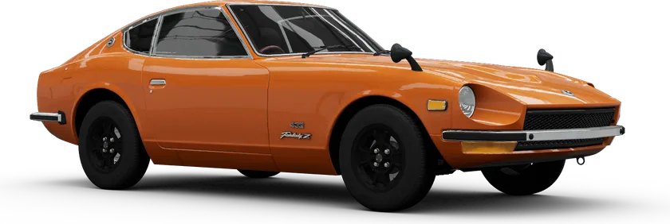

Nissan

Nissan
Nissan Fairlady
160 bhpRWD
View specsHide specs
- Engine
- 2.0L Naturally-Aspirated I6
- Power
- 160 bhp (119 kW)
- Torque
- 133 lb⋅ft (180 N·m)
- Drive type
- Rear-Wheel Drive
- Weight
- 2308 lbs (1047 kg)
Reference specifications from the original project. Variants may differ.